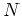
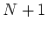

Typically, a user program can be decomposed into some user-written source code and a library of functions which implement the data access API. This library is typically written and maintained by some third party group (e.g., a commercial software vendor or a research organization). Users of a particular API access DODS data servers by replacing the `standard' version of that API with the DODS version. This new version presents the application with the same functions (so that all their existing programs continue to work just as before), but adds the capability to access remote data sets by connecting to DODS data servers. The server and the user program/client-library combination communicate over the Internet and thus may reside on any two machines that are connected to the Internet. Each client library for a particular API is built so that a user program which was written for that API, with or without prior knowledge of DODS, will be able to access any of the data available through DODS servers. The DODS client library for a particular API will necessarily perform different operations internally, but the interface it presents to the user program will be exactly the same as the original implementation of the library.
There are two conceptual models for a DODS data server: one in which data is
accessed using a server which closely mirrors the function calls supported by
the API used to store that data, and one which supports an interface using a
different API. In the latter case, calls in the server's interface (i.e.,
transmission protocol) are translated into calls in the data API and the
results are translated back from the data API to the server interface for
transmission. Figures  and
and  show
these two architectures.
show
these two architectures.
If DODS were to only support a single API, then clearly the first model of
data server (Figure  ) would be preferable since,
lacking the need to transform data representations, it is simpler to
implement. A set of client stubs for the API would serve as the
reimplementation of the library. User programs would link to this and the
internals of each function call would be replaced with code to marshal the
function's arguments and send them to the correct server stub. On the server
side, the corresponding stub would unmarshal the arguments, call the function
as originally implemented and arrange to return to the client the function's
result (i.e., the reimplementation of the library, linked with the user
program). Once constructed, simple optimizations could be incorporated to
such a system to improve network use.
) would be preferable since,
lacking the need to transform data representations, it is simpler to
implement. A set of client stubs for the API would serve as the
reimplementation of the library. User programs would link to this and the
internals of each function call would be replaced with code to marshal the
function's arguments and send them to the correct server stub. On the server
side, the corresponding stub would unmarshal the arguments, call the function
as originally implemented and arrange to return to the client the function's
result (i.e., the reimplementation of the library, linked with the user
program). Once constructed, simple optimizations could be incorporated to
such a system to improve network use.
However, DODS intends to support data access through many APIs since one goal of DODS is to provide a means for different data sets to interoperate. One possible server architecture would require DODS to provide software to translate information in each of its supported APIs to each of the other  supported APIs. If each data server provides access solely in terms of the API used to encode its data, then each new API brought into the set of supported APIs requires  additional translators be constructed. In effect, the set of APIs becomes closely coupled in this model, that is each new API effects the necessary support software for all APIs and future changes in the system require modifications to existing components. As the number of supported APIs increase the work required to add an additional API becomes intractable.
A second server architecture uses a common transmission protocol for all data servers and requires that each supported API be accessible using this protocol. In this model, support for a new API does not require modification or addition to the existing software for currently supported APIs. However, the trade-off necessary to reduce the growth of overall system complexity translates to increased cost to support each individual API because for each API two translation modules must be built, one to go from the API functions to the transmission protocol, and one to reverse that operation. Of course, if the intent is to only provide access to DODS data servers using the new API but, not to build servers for that API's data, then only one translation unit need be built. However, in general both translators will be desirable.
A third architecture involves combining elements of the the preceding two architectures; using servers which speak an API dependent protocol combined with translators that provide access to those servers through a single uniform interface. This design has one advantage over a design that builds translation into the client library and the server--it provides a simple way for an API to be partially added to DODS. However, in many ways this may not be a good feature for the system. If APIs can be added without translators this could significantly limit the functionality of the system. DODS would `support' many APIs, but only provide translators for a small set of APIs. Even though the set of APIs could grow, the set of data available to most of the APIs would be limited to data sets created using that API.
To control the complexity of adding support for an API to DODS, the second architecture was chosen. Each API is accessed using a single transmission protocol (see DODS--Data Access Protocol). This protocol (which in the past was referred to as the DODS API) is sufficiently flexible to represent information encoded with either of the two currently supported APIs. The translation to and from the user API and data API are performed by the client library and data server, respectively. This design was chosen over a design with data servers that use the data API as a transmission protocol because it was felt that interoperability of all data sets was a central goal of DODS7.
The client and server components shown in Figure  indicate that to add an additional API to the set of APIs supported by DODS,
four modules are involved: the surrogate user API library, Client Network
Interface, Network Server Interface and Server Side Interface. Of these four
modules two, the client interface and the server interface, are unlikely to
change from implementation to implementation. Thus, each additional API will
involve the construction of the surrogate client library and the server side
translator.
indicate that to add an additional API to the set of APIs supported by DODS,
four modules are involved: the surrogate user API library, Client Network
Interface, Network Server Interface and Server Side Interface. Of these four
modules two, the client interface and the server interface, are unlikely to
change from implementation to implementation. Thus, each additional API will
involve the construction of the surrogate client library and the server side
translator.
Note
In previous documentation, the DODS Server architecture was referred to as a Translating Server. In effect all DODS data servers are now translating servers. It is important to understand that a DODS server does not translate the data--it translates the method of access to data.